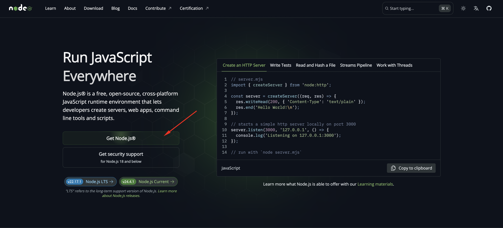
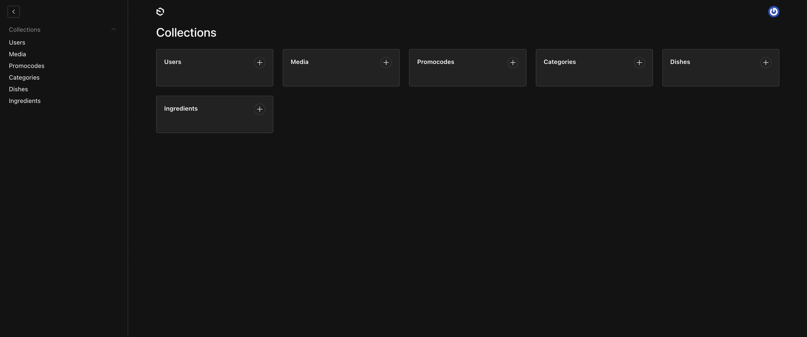

Mesio - Payload CMS Documentation by George_FX
Mesio - Payload CMS Documentation
Thank you for purchasing my theme. If you have any questions that are beyond the scope of this help file, please feel free to email via my user page contact form here . Thanks so much!
Before setting up the project, you should have a basic understanding of the following: Javascript, React, Node.js, npm for more information about the above topics, you can visit the following links: Javascript React Node.js npm
You need to follow the following steps to install the theme:
- 1. Introduction to Payload CMS
- 2. Install environment
- 3. Install dependencies
- 4. Enter your database uri
- 5. Run the project
- 6. Deploy the project
- 7. Support and Dependencies
1. Introduction to Payload CMS
This project is built with Payload CMS — a headless CMS powered by Node.js, offering a flexible and developer-friendly way to manage content via a modern admin panel and REST/GraphQL APIs.
You can find more information about Payload CMS on the official website .

2. Install environment
Your computer should have Node.js and npm installed to manage the dependencies. You can download Node.js (which includes npm) from the following link: Node.js
3. Install dependencies
To install the project dependencies, run the following command in the
project directory:
npm install

4. Enter your database uri
Enter your database URI in the
.env
file located in the root directory of the project.

You can obtain the database connection URI from your
Neon.com
dashboard.
After creating a project on Neon, navigate to your project settings or
database dashboard, where you’ll find the connection details,
including the URI. This URI is required to connect your application or
backend to the Neon database.

5. Run the project
To run the project, use the following command:
npm run dev
This command will start the development server, and you can access the project in your browser.

After running the project, you will be redirected to a page where you need to click the button - Go to Admin Panel

In the next window, you need to enter the email address and password of the administrator.

After this, you will be redirected to the admin panel, where you can manage the content of your project.
6. Deploy the project
You can find more information on how to deploy the project in the Payload CMS documentation: Payload CMS Deployment

7. Support and Dependencies
If you have any questions or need support, please contact me via
email:
kul.giorgi@gmail.com
The project uses the following dependencies: